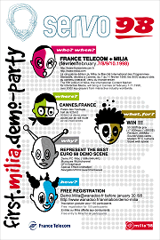

Servo'98
(par Skal
/ BOMB)

Vendredi 7, 21h, place de la Nation, Paris. Alors que le petit groupe des inscrits (par mail) à la Servo'98 commence à se reconnaitre et à se rassembler, une question revient souvent: "tu sais comment ca va se passer, toi ?". Car cette party s'annonce on ne peut plus atypique. A savoir:
- l'organisation: faite par des 'pros'
(La CyberNostra), n'étant pas forcément au fait des us et coutumes de
la scène demos;
- le lieu: Palais des Festivals,
Cannes (on a vu pire);
- la durée: 4 jours, du samedi au mardi;
- le contexte: salon du Milia'98, pince-fesse très kitch (et très payant)
des Décideurs(tm)(C)(R) du cyber-multimédia de demain;
- la précipitation apparente avec laquelle s'est monté cette party (annonce
fin décembre, peu de pub)
- le sponsoring massif de France Telecom: tout sera gratuit, matos dispo
à la demande (moniteurs, appareils photo numériques, scanners, ...), connexion
internet bourrines, avec WebCams en amuse-gueules (c'est le cas de le
dire).
Bref, le bus arrive et l'expédition commence, le signal étant donné par Patapom qui commence à pioncer au milieu du car.
12h plus tard, l'arrivée à Cannes est effectivement surréaliste: tout est là, nickel. Les badges d'entrée au salon et à la party, le matériel, la salle (trop grande pour le peu de demomakers ayant pu faire le voyage), les douches, la salle pour dormir (inaugurée derechef par Patapom) avec matelas (si,si), les sandwichs et autres tartes dispensés (gratuitement!) 24h sur 24h par un traiteur attitré, le soleil et la plage. A la vue des hotesses d'accueil, on se doute que c'est bel et bien 4 jours de folie qui viennent de commencer.
Effectivement. L'équipe des organisateurs - des marseillais gouailleurs emmenés par le terrible Christian - se révèle avoir la "tchatche" aussi développée que leur résistance au stress. Et font preuve d'une efficacité à faire palir n'importe quel organisateur de party. Leur arme absolue: Bruno, le DJ qui assurera pendant 72 heures une ambiance jungle/reggae de circonstance, avec des mixs drum'n'bass ebourrifants, et un "taquet dans les dents" (en marseillais dans le texte) à qui osera demander de la techno.
De toute facon, aucun teuton technoisant n'était àdéplorer parmi les participants, essentiellement des groupes parisiens: Psyko, Pulse, Bomb, .riBBon, Hardwaz (formé pour l'occasion), Flower Corp, ainsi que quelques électrons libres rapidement fagocités.
Après un court round d'observation, et devant l'ambiance très cool qui s'annoncait, les organisateurs nous ont laissé le controle du matériel, voire de la party: nous avons ainsi pu passer des démos en boucle sur les grands écrans du salon, taquiner les webcams afin (d'essayer) de dérider les cybers-culcul qui s'en servent seulement de scanner 10dpi, apprécier la débauche vidéo qui se faisaient en marge de la party (duplex avec Bruxelles, matos de video-conférence, ...), relater le déroulement des événements en direct sur IRC, et meme coder (un peu).
L'emplacement idoine de la salle (à coté de l'entrée de service et du parking) nous a permis de voir passer toutes sortes d'Objets Communicants Non-Identifiés: Cyber-Décideurs Interactifs avec un portable à l'oreille et un portable à la main; redoutables japonais mitrailleurs jouant à Quake dans la salle avec leurs caméras numériques, shootant tout ce qui bougait ou bippait; le tout sur fond de journalistes, jungle, et caméras de télé. Curieuse atmosphère, analogue à ce que peut donner la digestion combinée de petits fours, sandwichs, champagne et sodas. Il faut d'ailleurs noter, à la lueur de cette description, la performance du groupe Psyko (Loop/Maximus/MadProcess), qui ont réussi à finir leur démo, Machina, au milieu de ce sauna médiatique.
L'effet de surprise passé, l'esprit démo reprit naturellement le dessus (qu'on en juge par le succès rencontré par la bafouille crypto-palmipédique commise par Madé et votre serviteur -- PIN.EXE -- :). La party continuait, le capital sommeil fondait comme neige au soleil, et il fut bientot l'heure de la 'compétition' proprement dite. En fait de compétition, les démos présentées ayant tournées avant en permanence sur les grands écrans, il fut surtout question ici de montrer aux 'professionels du multimédia' présents que, non, décidement, les 'utilisateurs' auxquels ils refourgent leur CD ne sont pas tous des incultes de l'informatique 'ready-made'. Et savent meme parfois se servir de leur PC. Genre: demomakers contre le reste du monde WinTel.
Malgré un certain problème de communication (hé oui. Allez expliquer à des gens qui remplissent des DVD entiers de MPEG et autres scenes cinématiques ce qu'est une demo de code pur qui tient sur une disquette!) les productions présentées avaient de quoi impressionner: Square de Pulse, Machina de Psyko, Eden de Bomb (dans l'ordre des gagnants), ainsi que d'autres du même calibre (Tribes/Pulse+Alex, sur grand écran, produit toujours son effet "je-tombe-de-ma-chaise-lors-de-la-scene-de-la-salle-aux-piliers", rassurez-vous :). La coloration 'non-demomaker' du jury avait meme un certain avantage: c'est l'ambiance visuelle qui a été déterminante plus que l'aspect technique, opaque à la plupart des spectateurs. D'où la très méritée première place de la Square, effacant ainsi l'affront de la TP97.
Après une dernière coupe de champagne, une dernière interview, et surtout une photo de tous les participants sur les marches du Palais, c'est avec le coeur léger (et le sommeil profond, pour Patapom) que nous sommes remontés dans le bus pour aller vérifier que les stations-service de l'A1 n'avaient pas changé de marque de café.
Cannes, 7 février
1998, 26 demomakers parisiens posent le pied sur la croisette, prêt à
vivre 4 jours ébouriffants et pleins de surprises durant la 1ère SERVO
party qui se déroulait au salon professionnel MILIA 98.

<< ... A
la vue des hotesses d'accueil, on se doute que c'est bel et bien 4 jours
de folie qui viennent de commencer ... >>
<< ... redoutables
japonais mitrailleurs jouant à Quake dans la salle avec leurs caméras
numériques ... >>
<< ... c'est
avec le coeur léger (et le sommeil profond, pour Patapom) ... >>